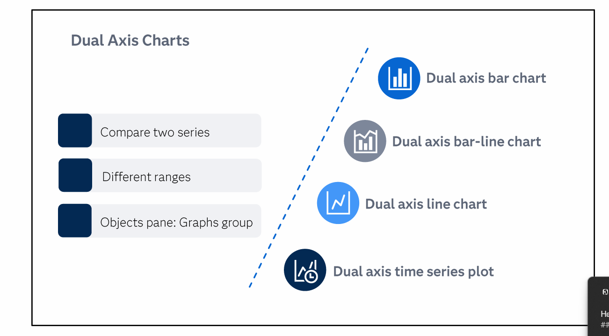

📊 Dual Axis Charts — Compare Two Series with Different Ranges ▶
From course: "Dual axis charts are useful for comparing two series with different ranges. Located in the Graphs group in the Objects pane."
📊 Interactive: All 4 Types
📋 Complete Comparison

| Feature | 1️⃣ Bar-Bar | 2️⃣ Bar-Line | 3️⃣ Line-Line | 4️⃣ Time Series |
|---|---|---|---|---|
| Categories | Independent | Bar=Indep, Line=Dep | Dependent | Time (date required) |
| Bar axis | Starts at 0 ✅ | Starts at 0 ✅ | N/A | N/A |
| Line axis | N/A | Does NOT start at 0 | Does NOT start at 0 | Does NOT start at 0 |
| Forecasts? | ❌ No | ❌ No | ❌ No | ❌ No |
| Roles | Category + 2 Measures | Category + 2 Measures | Category + 2 Measures | Time + 2 Measures |
| Best for | Comparing groups | Volume vs Rate | Trends over ordinal categories | Seasonal patterns |
1️⃣ Dual Axis Bar Chart
"Display two bar charts with a shared category axis and separate response axes."
✅ Categories are independent
✅ Bar axis starts at zero
✅ Sorted descending by first measure by default
❌ Forecasts are not available
Example: Customer satisfaction vs number of sales reps by continent
2️⃣ Dual Axis Bar-Line Chart
"Combines a bar chart and a line chart on a shared category axis."
✅ Bar = independent, Line = dependent
✅ Bar axis starts at zero
✅ Line axis does NOT start at zero
✅ Additional options: markers, line thickness, grouping style
Example: Temperature (bars) and rainfall (line) by month
3️⃣ Dual Axis Line Chart
"Display data using two lines that connect data values for a shared category axis."
✅ Categories are dependent
✅ Line axes do NOT start at zero
✅ Good for showing relationships between measures of different scales
Example: Facility efficiency and number of employees by month
4️⃣ Dual Axis Time Series Plot
"Display two time series with a common time axis on separate response axes."
✅ Time axis (date/datetime required)
✅ Good for spotting seasonal movements
❌ Forecasts are NOT added
✅ Supports binning interval
Example: Unit actual vs yield rates over time
• All 4 types located in Graphs group ✅
• All compare two measures with different ranges ✅
• Left Y = primary, Right Y = secondary ⚠️
• Sorted descending by first measure by default ⚠️
• Forecasts are NOT added to dual axis time series plot ❌
• Bar axes start at zero — Line axes do NOT start at zero ⚠️
• Independent categories → use Bar or Bar-Line
• Dependent categories → use Line or Time Series
Bar-Bar = Both independent (by group)
Bar-Line = Bulk + Line (volume vs rate)
Line-Line = Linked across periods
Time Series = Time + seasonal patterns